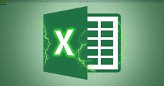

Microsoft Word es un procesador de textos, desarrollado por Microsoft. Permite crear, editar, formatear y compartir documentos digitales —como cartas, informes, currículums y trabajos— de forma sencilla y ordenada, integrando texto, imágenes, tablas y gráficos. Forma parte de la suite Microsoft 365.

Microsoft Excel es un software de hoja de cálculo desarrollado por Microsoft que permite organizar, manipular, analizar y visualizar datos numéricos y alfanuméricos en tablas formadas por filas y columnas. Es una herramienta fundamental en el paquete Microsoft 365 usada para contabilidad, finanzas, creación de gráficos, automatización mediante macros y análisis de tendencias.
Microsoft Access es un sistema de gestión de bases de datos relacionales (RDBMS) de Microsoft que permite recopilar, organizar y consultar grandes volúmenes de información. Combina la facilidad de uso de una interfaz gráfica con potentes herramientas para crear formularios, informes y consultas personalizadas, ideal para pequeñas y medianas empresas o usuarios sin conocimientos técnicos avanzados.

HTML (HyperText Markup Language) es el lenguaje estándar utilizado para estructurar y presentar el contenido de las páginas web. Utiliza etiquetas y elementos para definir encabezados, párrafos, enlaces, imágenes y otros componentes multimedia.